Trumpametražis filmas · operatorė
Kur baigiasi horizontas
Konkursinis filmas, dalyvavęs „Kino kovose“ ir rodytas kino teatre. Šiame projekte buvau operatorė.
Multimedija · video montažas · grafinis dizainas
Studijuoju multimediją ir kompiuterinį dizainą Vilniaus Gedimino technikos universitete. Portfolio pristatau filmų, video montažo, grafinių vizualų, logotipų ir maketavimo darbus.
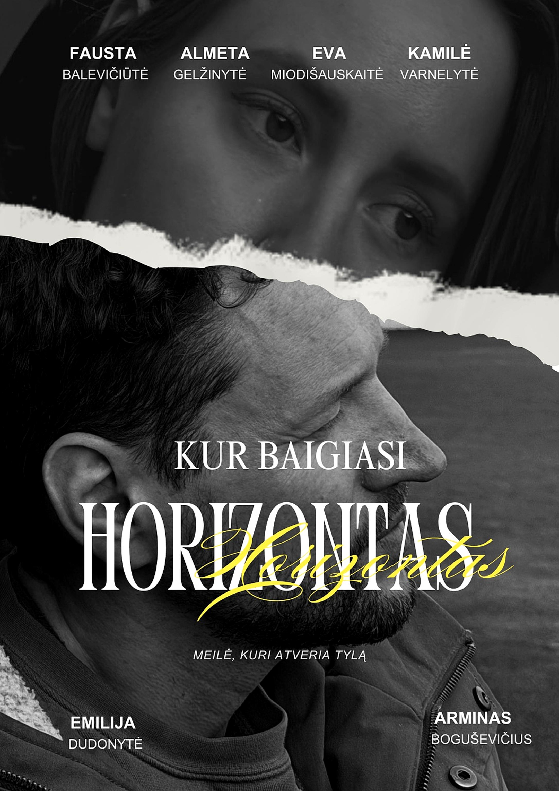
Apie mane
Domiuosi video kūrimu, montažu, grafiniu dizainu, vizualine komunikacija ir turinio paruošimu skirtingiems formatams.
Dirbu su „DaVinci Resolve“, „CapCut“, „Photoshop“, „Illustrator“, „InDesign“, „After Effects“ ir „Blender“.
Filmų projektuose išbandžiau operatorės, montuotojos ir garso režisierės roles. Ši patirtis padėjo geriau suprasti kadro, ritmo, garso ir montažo svarbą.
Filmai ir video montažas
Trumpametražis filmas · operatorė
Konkursinis filmas, dalyvavęs „Kino kovose“ ir rodytas kino teatre. Šiame projekte buvau operatorė.
Trumpametražis filmas · montažas ir garsas
Šį filmą montavau ir dirbau su garso režisūra. Daugiausia dėmesio skyriau montažo ritmui, nuotaikai ir sklandžiam emociniam pasakojimui.
After Effects · video render
Video render darbas, kuriame matomas judesys, kompozicija ir vizualinio ritmo kūrimas. Redaguojamų projekto failų svetainėje nedalinu.
Įgūdžiai
Trumpų ir ilgesnių video montažas, ritmas, garso ir vaizdo suderinimas.
CapCut · DaVinci ResolvePosteriai, reklaminiai vizualai, produktų kompozicijos ir skaitmeniniai maketai.
Photoshop · Canva · IllustratorLogotipo idėjos, spalvų kryptys, moodboard'ai ir vizualinio stiliaus paieška.
Illustrator · InDesignBazinė animacija, vizualiniai efektai ir 3D objektų kūrimo praktika.
After Effects · BlenderGrafinis dizainas
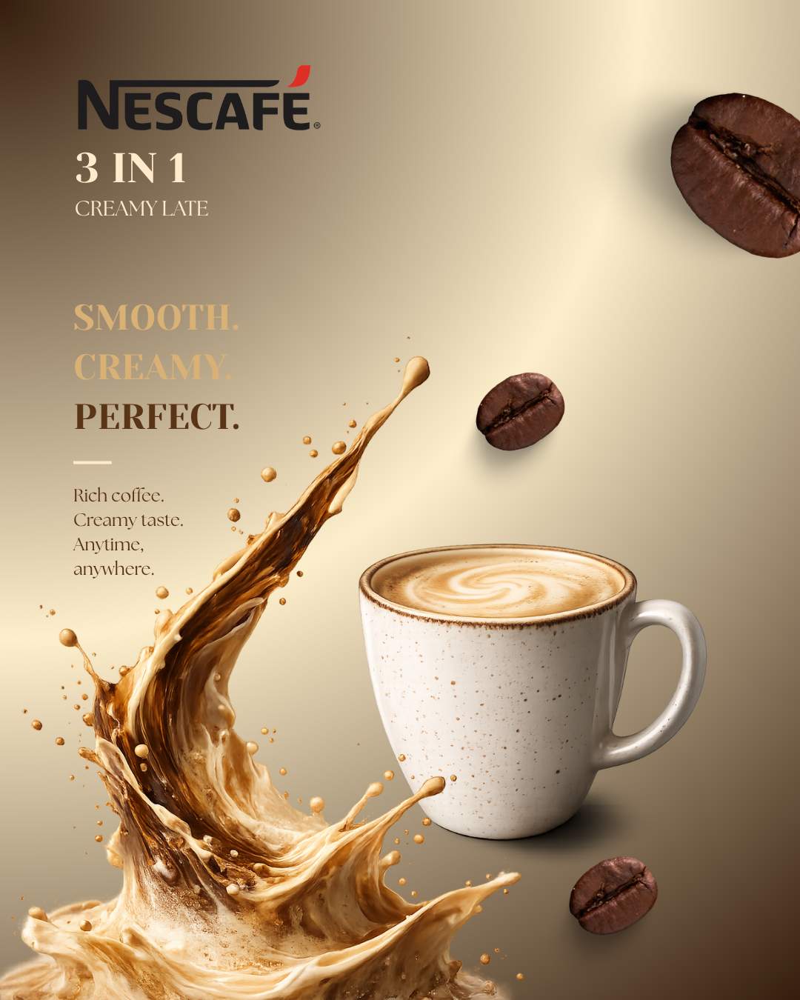
Reklaminis posteris
Produkto reklaminis vizualas, kuriame derinama kompozicija, spalva ir aiškus produkto akcentas.
Peržiūrėti Canva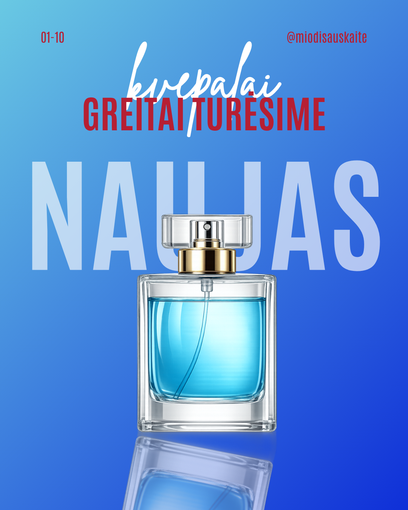
Reklaminis posteris
Produkto pristatymas, kuriame svarbi šviesa, kompozicija ir vizualinė nuotaika.
Peržiūrėti Canva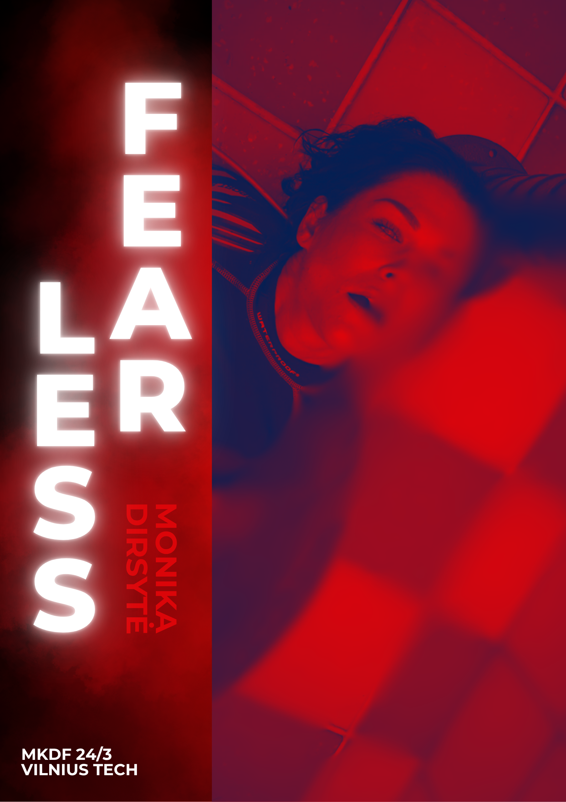
Portretinis posteris
Portretinis posteris apie dėstytoją, kuriame svarbi informacijos hierarchija ir vizualinis charakteris.
Peržiūrėti Canva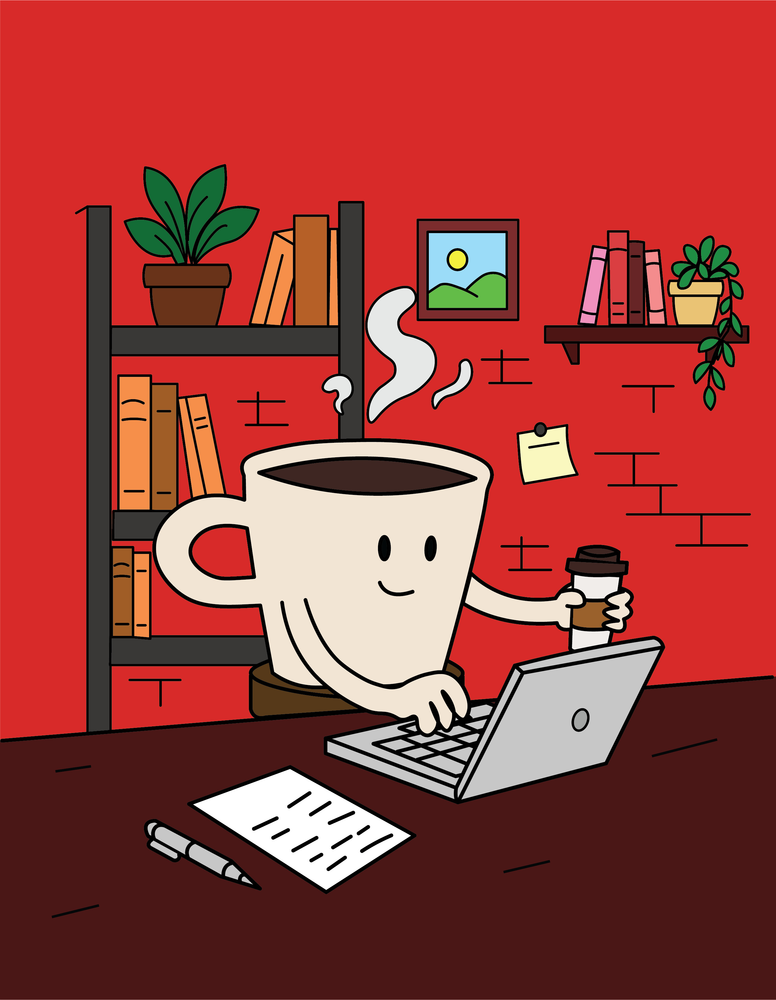
Produkto vizualas
Kavos prekės ženklo vizualinė kryptis: spalvos, pakuotės estetika ir produkto pateikimas.
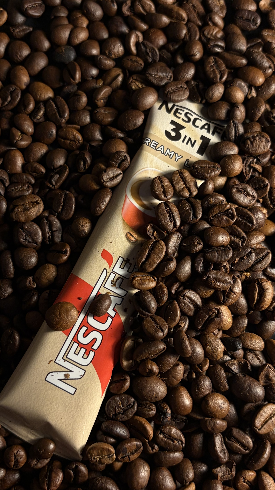
Produkto turinys
Produkto nuotrauka, pritaikoma reklamos, posterio ar skaitmeninio maketo kūrimui.
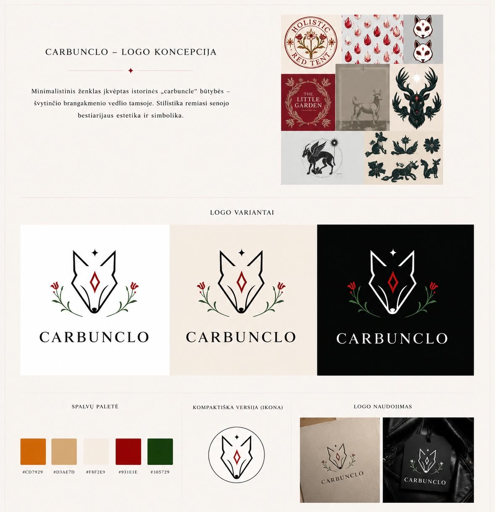
Moodboard
Nuotaikos, spalvų ir stiliaus paieška prieš kuriant galutinį dizaino sprendimą.

Posterio dizainas
Eksperimentinis posteris, kuriame derinama judesio nuotaika, tipografija ir stiprus vizualinis centras.
Logotipai
Grožio prekės ženklo identitetas
Subtilus odos priežiūros prekės ženklas, kuriam sukūriau logotipą, spalvų sistemą ir vizualinę kryptį. Identitetas jungia natūralumą, ramybę ir šiuolaikišką prabangą.
Koncepcija
„Lunara“ pavadinimas siejasi su mėnuliu, natūraliais ciklais ir vakaro ramybe. Dėl to ženklui pasirinkta švelni, subalansuota ir lengvai atpažįstama forma.
Simbolyje susijungia lašas, lapas ir mėnulio pjautuvas. Lašas perteikia drėkinimą, lapas – natūralią sudėtį, o mėnulis – odos atsinaujinimą ir kasdienį priežiūros ritualą.
Vizualinė sistema
Smėlio ir šilti balti tonai kuria švaros bei natūralumo pojūtį. Prislopinta melsva spalva suteikia patikimumo, gaivos ir išskirtinumo, o juoda užtikrina aiškų ženklo naudojimą skirtinguose formatuose.
Pritaikymas
Logotipo sistema išbandyta ant kosmetikos pakuočių, produkto etikečių, vizitinių kortelių ir pirkinių maišelio. Tai parodo, kad ženklas išlieka atpažįstamas tiek mažame, tiek dideliame formate.
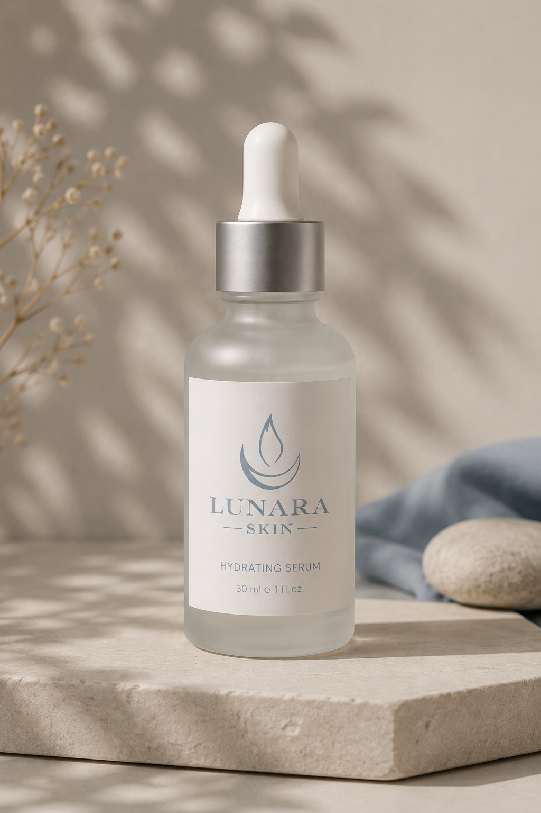
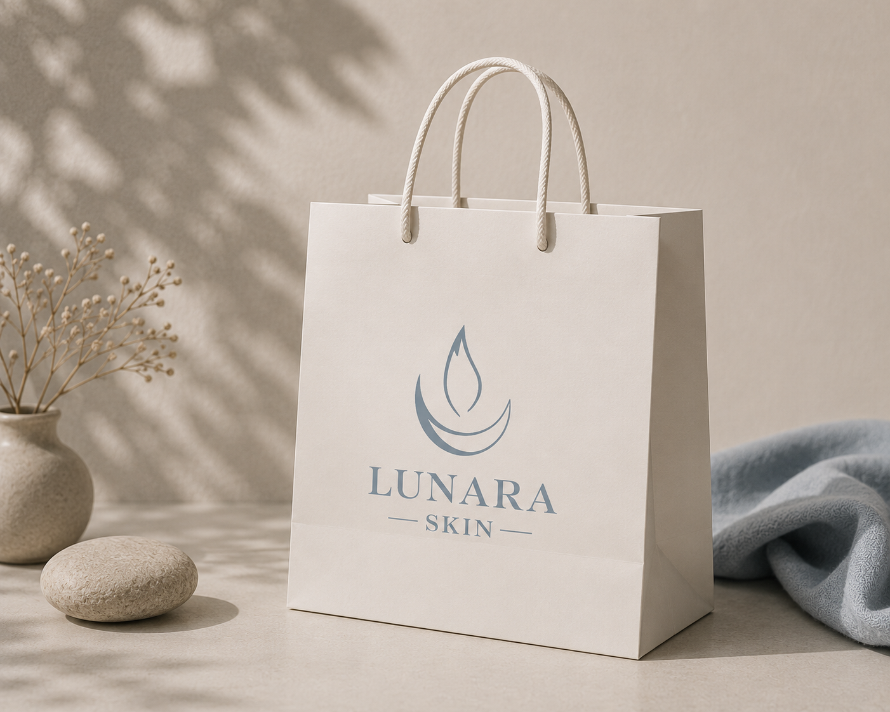
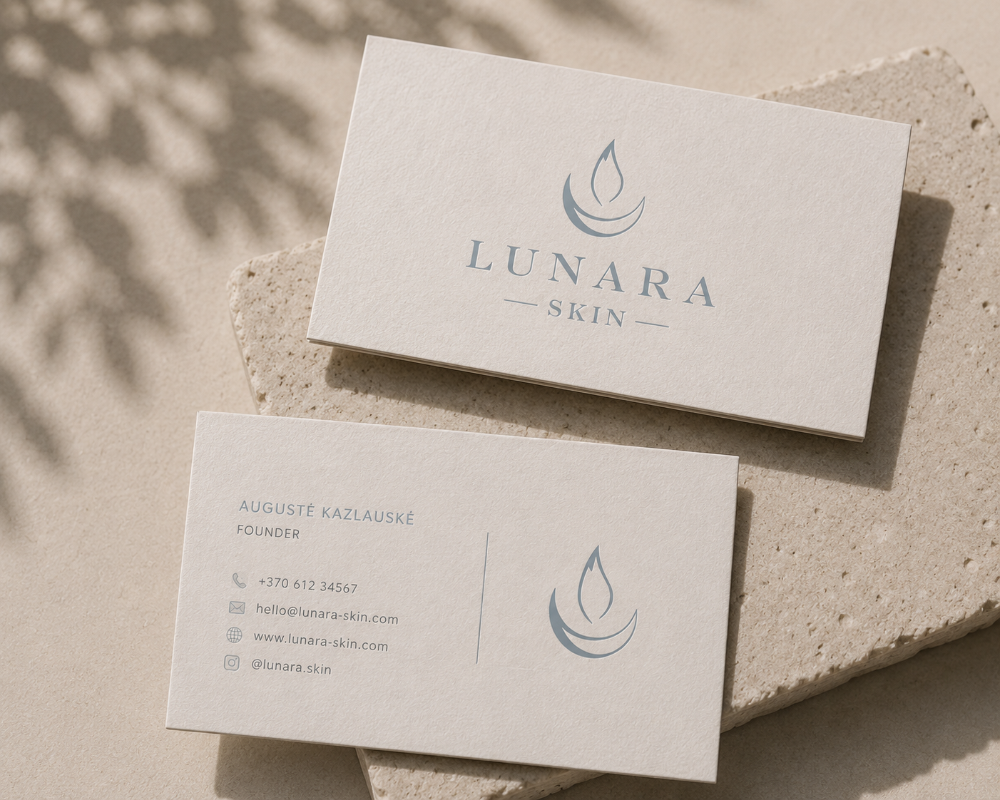
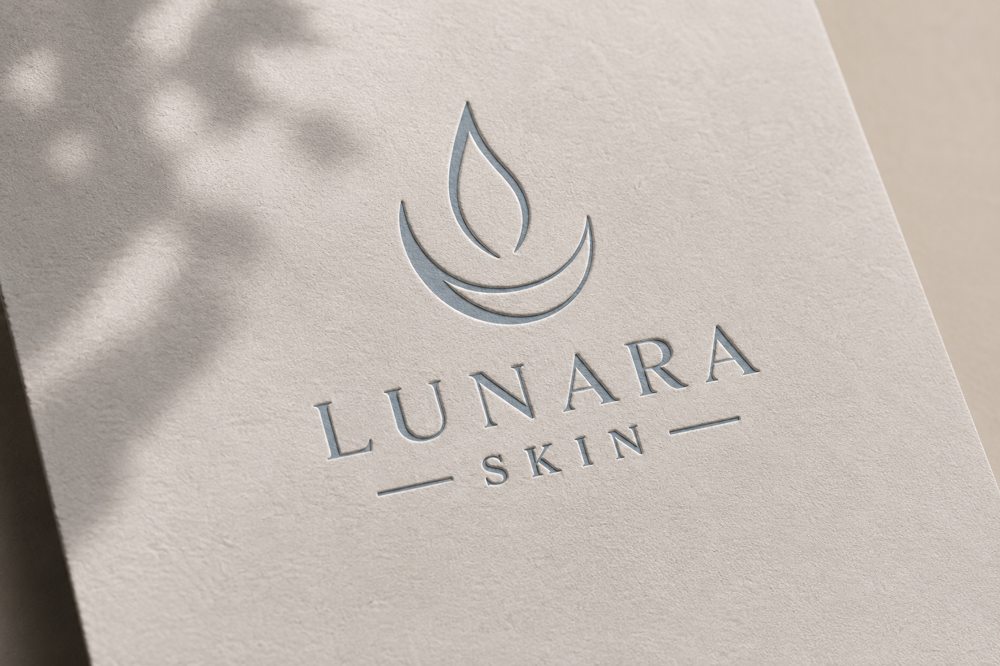
Kiti logotipai
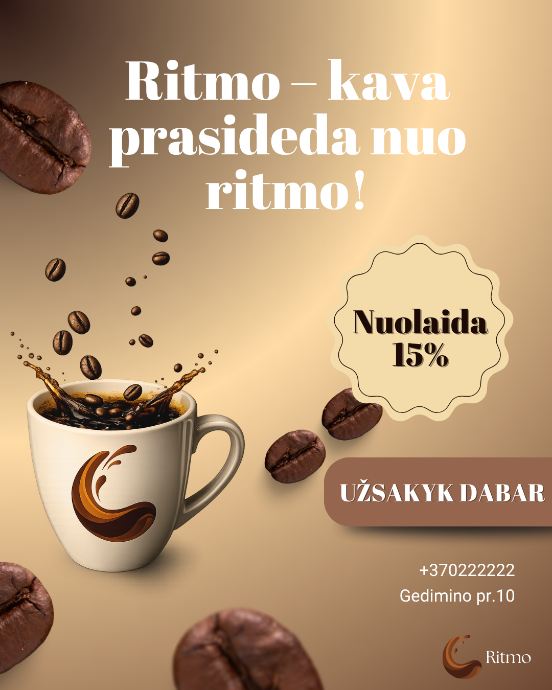
Universiteto logotipo idėja
Švari forma, judesio pojūtis ir lengvai atpažįstamas ženklas.
Peržiūrėti Canva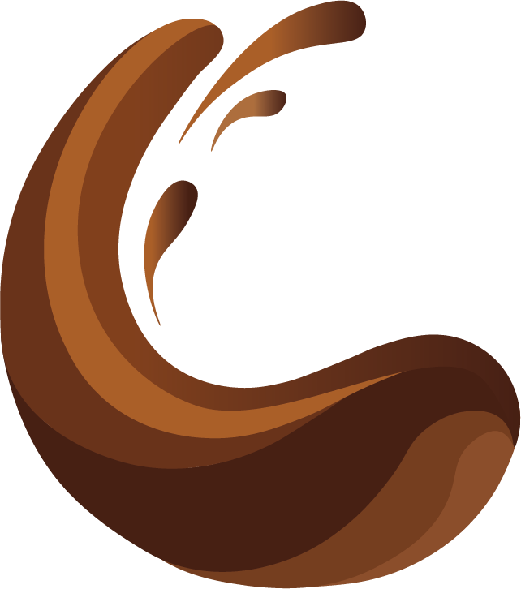
Produkto identitetas
Minimalus logotipo sprendimas, tinkamas pakuotei ir produkto komunikacijai.
Kontaktai
Esu atvira praktikos, kūrybinių projektų ar bendradarbiavimo pasiūlymams.